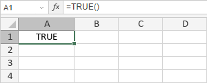

TRUE funkcija
Funkcija TRUE je jedna od logičkih funkcija. Funkcija vraća TRUE i ne zahteva nijedan argument.
Sintaksa
TRUE()
Napomene
Kako primeniti funkciju TRUE.
Primeri
Slika ispod prikazuje rezultat koji vraća funkcija TRUE.

Funkcija TRUE je jedna od logičkih funkcija. Funkcija vraća TRUE i ne zahteva nijedan argument.
TRUE()
Kako primeniti funkciju TRUE.
Slika ispod prikazuje rezultat koji vraća funkcija TRUE.
